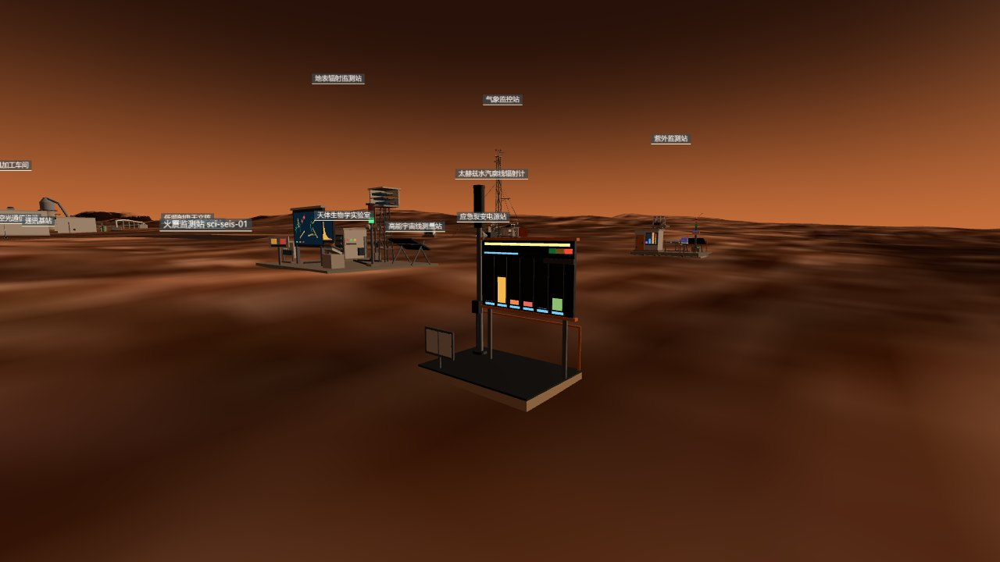
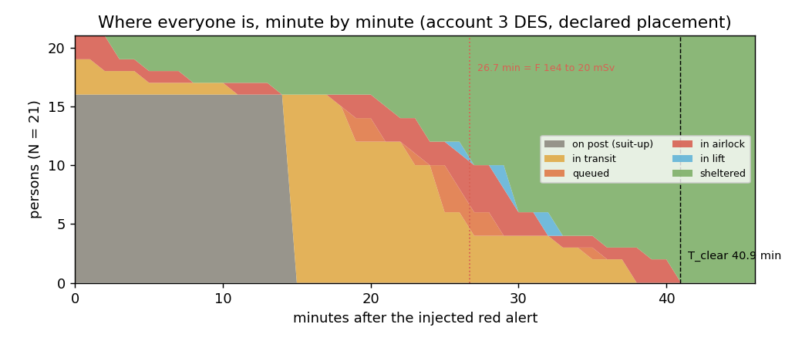
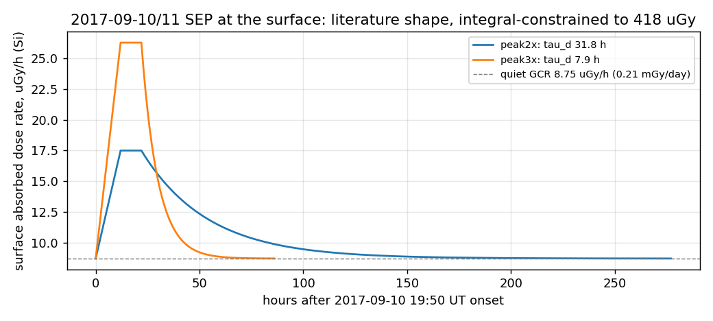
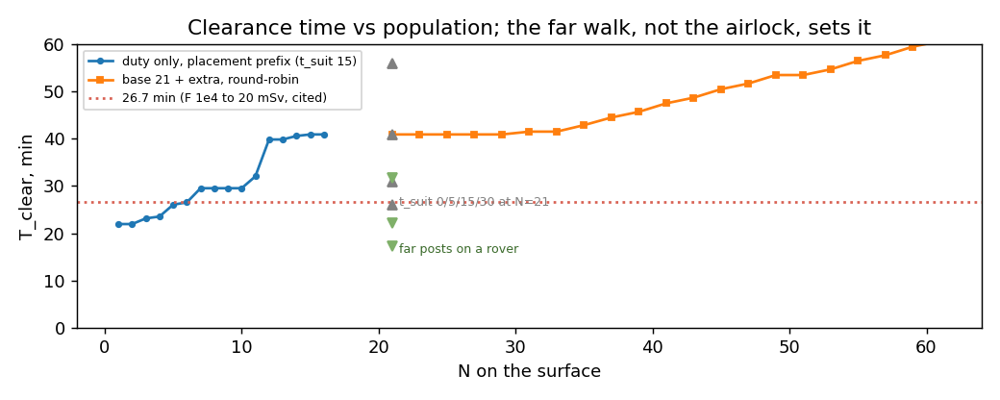

The alarm bus was wired months ago — the weather station's shared sign, the radiation station's 3×/30× rule, the three-depth sentinel network — but nobody had ever run it as one event. This is the first time: a RAD-measured storm as the input, the warning chain's four clocks re-derived, every surface person's path to shielding simulated minute by minute, and the honest result that the run is not the hard part.
Five accounts, pre-registered before any number was computed, then a JSON timeline the engine can play.
The input is not invented. It is the largest solar energetic particle event that the Radiation Assessment Detector on Curiosity has measured on the Martian surface: onset 10 September 2017 at 19:50 UT, peak fluxes the next morning, a plateau of about ten hours, an event-integrated absorbed dose of 418 µGy in silicon, and a peak dose rate two to three times the galactic background (Zeitlin, Ehresmann and Hassler, 2018). The hourly dose-rate table is not in hand, so the curve's shape is a declared parameter and the two literature integrals are the gates.
The five accounts are the event curve, the warning clocks, the evacuation capacity, the shelter dose per position, and the drill timeline itself. Expectations and gates for all five were written and committed before the first script ran; where a result missed the expectation the miss is printed and the conclusion changed, not the expectation. Thirty-one gates, all green; four pre-registered expectations missed.
The deliverable to the engine is drill.json: for 27 units, the alarm level and the people counts at each minute from the injected red alert to the last person in; for each of the 21 surface people, a contiguous path from post to shelter. A small console unit on the surface, next to the radiation station, is the reference implementation of the response hook every unit is asked to declare.


Four clocks, one identity, and a queue that never forms.
The clocks. Protons released at the Sun arrive in order of energy along a 2.04 AU Parker spiral. Re-deriving the radiation station's account from the kinematics: multi-GeV first arrivals at 17.0 min, the 166 MeV atmospheric cutoff complete at 32.2 min, the orbital detector's 100 MeV front at 39.6 min, its 10 MeV population at 117.1 min. The Jezero atmosphere, 20.7 g/cm², is a high-pass filter at 166 MeV, so the surface sees the earliest particles and never has a lead over its own dose: the particles that trip the alarm are the particles that start the dose. The orbital tier's 100 MeV trigger therefore runs 7 to 23 minutes behind the surface dose onset, depending on which arrival you call the onset. The only positive lead anywhere in the chain is the L4 coronagraph's one-to-three-day structural forecast.
The alarm. The surface station counts penetrating particles in a one-minute sliding window; yellow at three times quiet, red above thirty. The 2017 event raised protons above 135 MeV by a factor of four at most, so its count peak sits between two and four: red is excluded, yellow cannot be established without the near-cutoff spectrum. The drill's red at t = 0 is therefore an exercise injection, and the event curve is aligned to it — the most conservative alignment, since the ground has no lead.
The evacuation. A deterministic discrete-event simulation moves every surface person: suit-up (declared 15 min), walk at 1 m/s to the nearest shielded entrance, queue, a 6 m³ airlock cycle of 3 min carrying two suited people, and at the lift station a 12-person cab down 30 m to the foyer. The village's thirty residents shelter in place under two metres of cover; their vestibule closes. The last one in comes from the launch pad, 1.36 km away: 15 min suiting up, 22.6 walking, no wait, 3 in the lock. The pre-registration bet that the airlock's serial queue would be the bottleneck. It came third: thirteen posts arrive staggered and the locks sit idle most of the time. The cab, rated for twelve, never fills — the vestibule meters people two at a time.
The dose. Integrating the event curve to each person's sheltering time, the last one in receives 0.2 to 0.3 µGy more than someone already underground — a thousandth of the event. Ninety percent of the 418 µGy arrives 32 to 82 hours after onset. For a RAD-class event the run does not change the dose; the stay does. For a 1972-class event, at the radiation station's cited 44.9 mSv/h, the same 41 minutes on the surface is 30.6 mSv, past the occupational annual limit — and nobody from the far posts reaches the tunnel inside the 26.7 minutes that event allows.


Every number above, and which run produced it. Status: literature · cited card · account · cross-implementation · declared parameter · bound only · declared gap.
| Claim | Value | Produced by | Status |
|---|---|---|---|
| Event-integrated absorbed dose, RAD-B | 418 µGy (Si) | Ehresmann 2018 GRL 45:5305; Zeitlin 2018 GRL 45:5845; Hassler 2018 Sp. Weather | literature |
| Onset / peak / plateau | 19:50 UT 10 Sep · next morning · ~10 h | Ehresmann 2018 (abstract) | literature |
| Peak dose rate over background; proton flux >135 MeV | 2–3× · ×4 | Zeitlin 2018; Ehresmann 2018 | literature |
| Quiet surface rate used as baseline | 0.21 mGy/day = 8.75 µGy/h | sci-rad-01 card, account 1 (RAD) | cited card |
| Decay constant after a 12 h rise + 10 h plateau (peak 2× / 3×) | 31.8 / 7.9 h | mars-drill/ledger/01_event.py | account, shape declared |
| Event in quiet-sol equivalents | 1.94 sol | ledger/01_event.py | account |
| Count peak factor at the surface station; red (30×) excluded | 2–4× | ledger/01_event.py | asymmetric |
| Arrival clocks 17.0 / 32.2 / 39.6 / 117.1 min; window 77.5 | <1% of sci-rad-01 account 5 | ledger/02_warning.py | cross-implementation |
| EPS 100 MeV front vs surface dose onset | −22.7 / −11.8 / −7.4 min | ledger/02_warning.py | account |
| Ground yellow after first arrival, 4× event, hard→soft spectrum | 12.5–13.8 min | ledger/02_warning.py | account |
| Sentinel 5σ confirmation, F=2 / 10 | 188 / 8.5 s | ledger/02_warning.py (reproduces sci-rad-02) | cross-implementation |
| Personnel airlock / lift throughput | 40 / 698 persons·h⁻¹ | ledger/03_evacuation.py | p=2 declared |
| Surface cleared, base case | 40.9 min (N=21) | ledger/03_evacuation.py | placement declared, roster pending |
| Last person's clock (launch pad → tunnel lock) | 15 + 22.6 + 0 + 3 + 0.3 min | ledger/03_evacuation.py | account |
| Bottleneck ranking (pre-registered: queue first) | walk 22.6 > suit 15 > wait 2.5 | ledger/03_evacuation.py | prereg miss |
| Against the 26.7 min of a 1972-class event | fails from N=7; suit 0 → 25.9; rovers → 31.7/22.3/17.3 | ledger/03_evacuation.py; rate cited from sci-rad-01 account 5 | asymmetric |
| Vehicle gate with 0 / 4 / 8 seats | 40.9 / 39.4 / 39.4 min | ledger/03_evacuation.py | ablation |
| Full 12-person lift loads | 0 of 5 trips | ledger/03_evacuation.py | account |
| Roster brackets: all duty at pwr-grid-01 / at the launch pad | 30.7 / 49.9 min | ledger/03_evacuation.py | bounds |
| Roster-proportional placement (66 surface billets → 16) | 41.2 min | ledger/03_evacuation.py; ops-roster-01 roster.json (r1) | cited × declared peak |
| Last person's extra dose, literature shape / 2 h-rise shape | 0.2–0.3 / 1.0–2.0 µGy | ledger/04_shelter_dose.py | account, both shapes |
| 90% of the event delivered after | 82 / 32 h | ledger/04_shelter_dose.py | account |
| Same 41 min on the surface at F=10³ / 10⁴ | 3.1 / 30.6 mSv | ledger/04_shelter_dose.py; rates from sci-rad-01 account 5 | cited × account |
| Village bunk SEP dose per event | ≤ 48 µGy | ledger/04_shelter_dose.py (Run B 27.0 mSv/yr floor) | bound only |
| Undercity (30 m rock) / deep lab SEP increment | ≤ 4 µGy / 0 | sci-rad-03 / sci-rad-04 cards | cited card |
| Known answer: 0.66 ÷ (0.21 × 1.0275) | 3.06 vs ⟨Q⟩ 3.05 | ledger/04_shelter_dose.py G4.4 | gate |
| drill.json: units with keyframes / minutes / paths / gates | 27 / 47 / 21 / 31 green | ledger/05_drill.py; ledger/run_all.py | account |
| Console unit: triangles / bbox / static and full-cycle minY | 1006 / 3.25×4.37×2.10 m / 0 | validate_unit.mjs; mars-drill/tools/measure.mjs | measured |
| Undercity bed count · duty-room wall density · crew-vehicle seats · cover vs an SEP spectrum · the roster | — | ops-roster-01 · surface holders · veh-ground-01 · res-glass-01 | declared gap |
What the drill exposed, and what the ledger got wrong about itself.
The console runs the drill by itself until the engine's player is wired.
Open the viewer with ?colony=1&inspect=ops-drill-01. The console stands beside the surface radiation station in the environment-warning cluster. Press V to look around and use the SEP drill button on the left edge of the screen (or the console's own start action): the mast turns red, the siren horn stirs, and the six bars on the board replay the city's per-minute location counts at sixty times real speed — one real minute per second, the ratio printed on the plaque rather than passed off as real time. After 47 seconds the last person is in and the mast returns to green.
Every unit in the timeline is asked to declare its own reaction to the alarm level through a userData.alarm hook; the spec and the dispatch to the thirteen unit classes are in the sources below. Once the integrator wires the engine's event bus, ?drill=1 will play the whole city: gate lamps, cycling airlocks, a sealed village vestibule, grounded aircraft, a frozen launch window, a cleared palace — and two sentinel screens thirty and three thousand metres underground that, correctly, do not change at all.